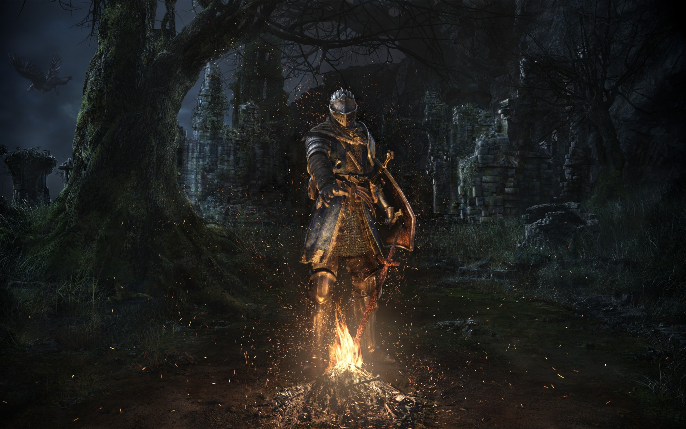

Dark Souls
Dark Souls is an action role-playing video game developed by FromSoftware and published by Namco Bandai Games for PlayStation 3, Xbox 360, and Microsoft Windows. A spiritual successor to FromSoftware's Demon's Souls, it is the second installment in the Souls series of games. The game was self-published and released in Japan in September 2011, and worldwide by Namco Bandai Games the following month.
In August 2012, the "Prepare to Die" edition of Dark Souls was released for Windows, featuring additional content previously unavailable to PlayStation 3 and Xbox 360 users. In October 2012, the additional content from the Windows version was released as downloadable content for consoles under the subtitle Artorias of the Abyss. Dark Souls takes place in the fictional kingdom of Lordran. Players assume the role of a cursed undead character who begins a pilgrimage to discover the fate of his kind.
Dark Souls received critical acclaim upon its release and is considered to be one of the best video games ever made, with critics praising its combat depth, intricate world design, and deeply rooted lore. However, the game's difficulty received mixed reviews. While some praised the challenge it provides, others criticized it for being unnecessarily unforgiving. The PC version of the game was less well-received, with criticism aimed at numerous technical issues, bugs, and crashes. By April 2013, the game had sold over two million copies worldwide. The PC version was the second most played Games for Windows Live title in 2012 based on unique users. The game spawned two sequels, Dark Souls II and III, released in 2014 and 2016 respectively.